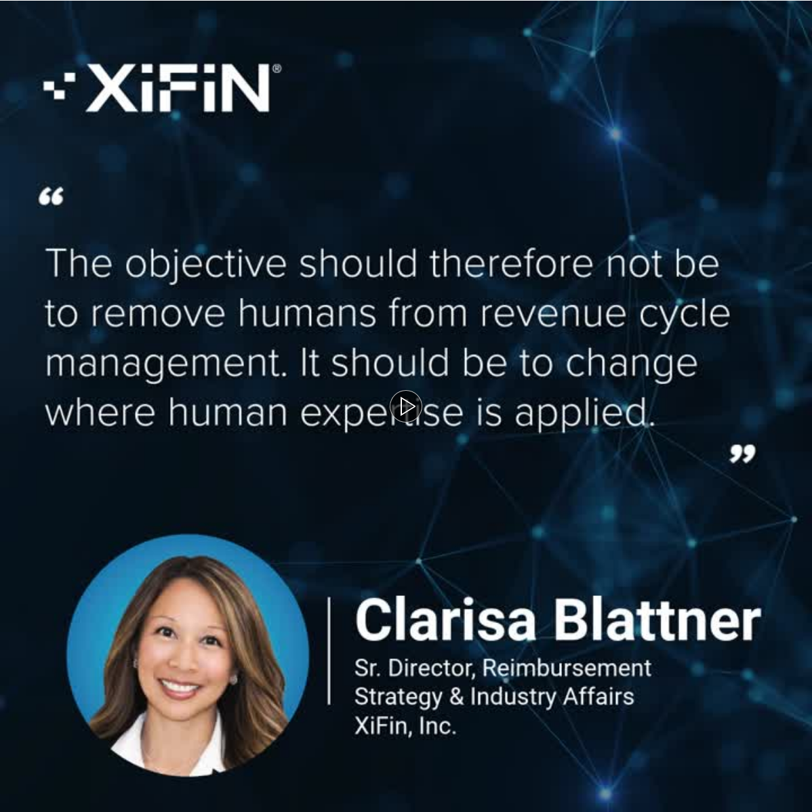
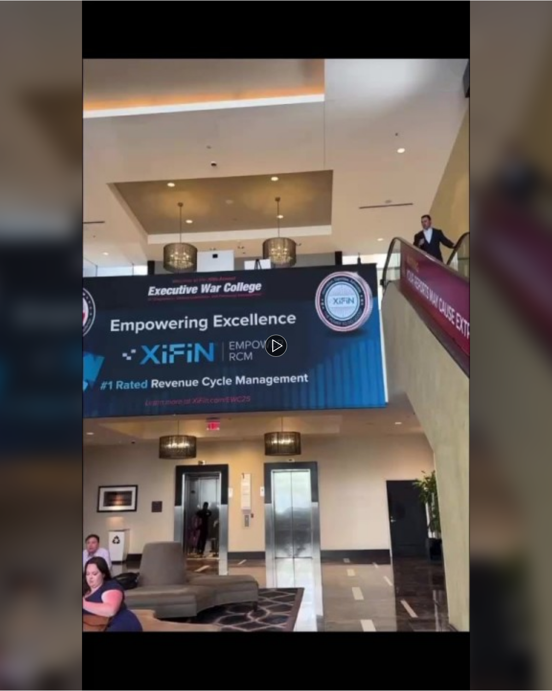
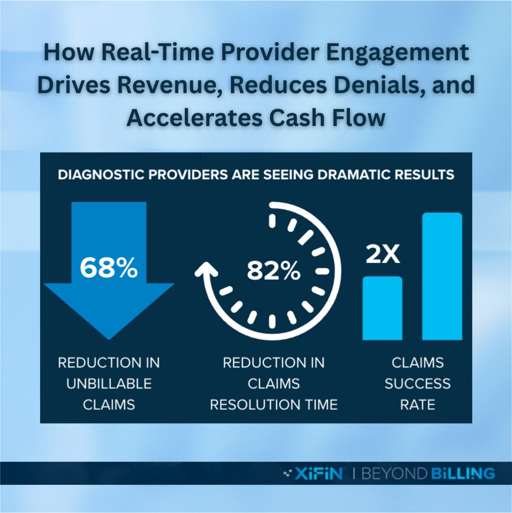
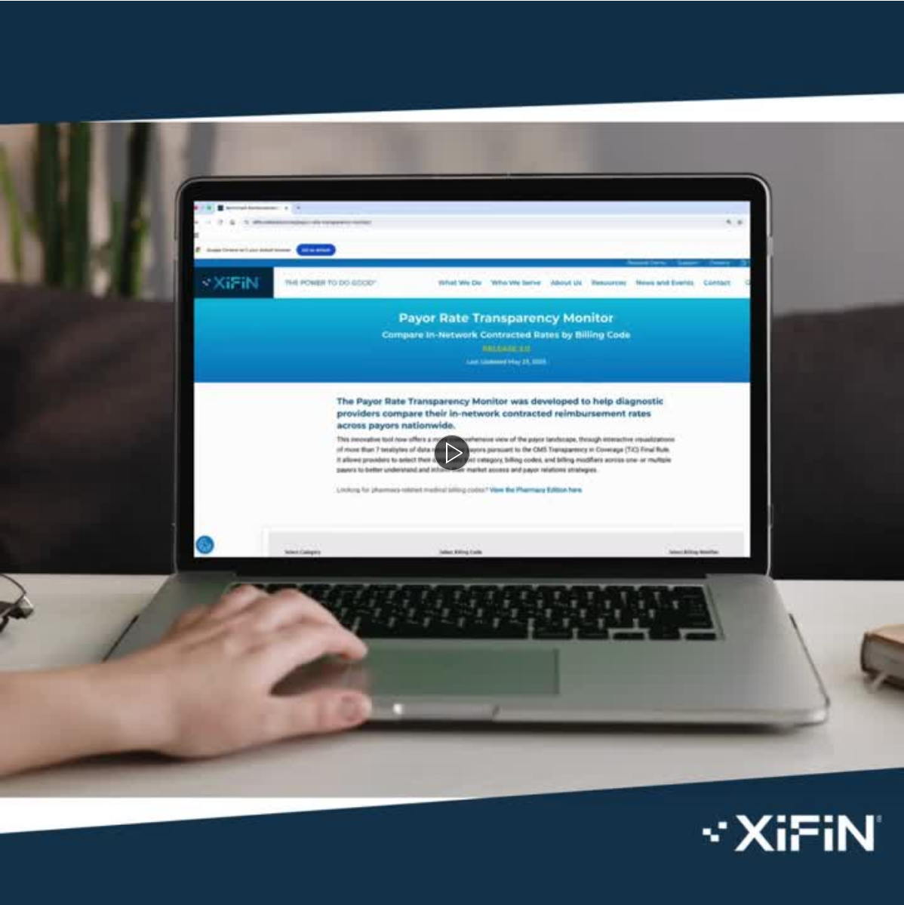
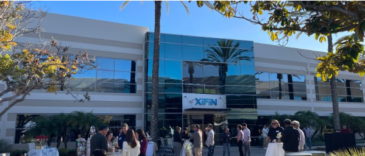
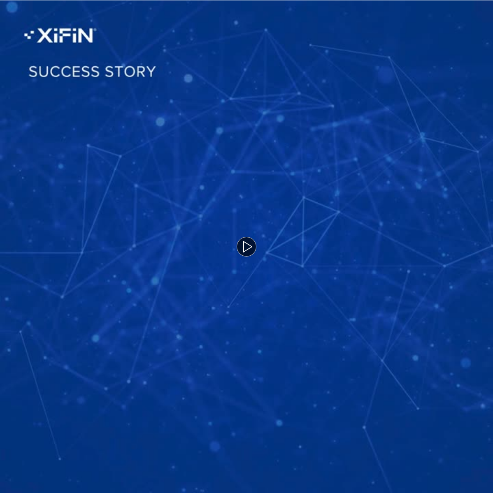
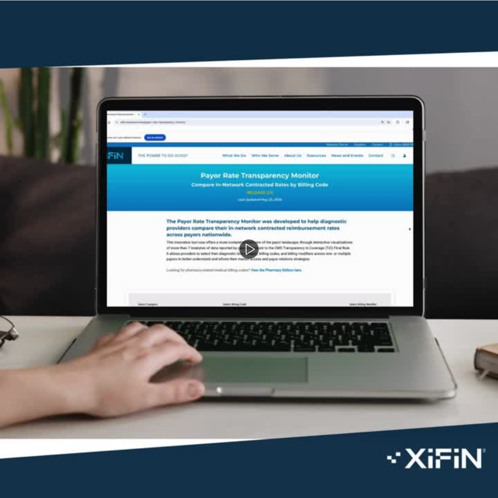
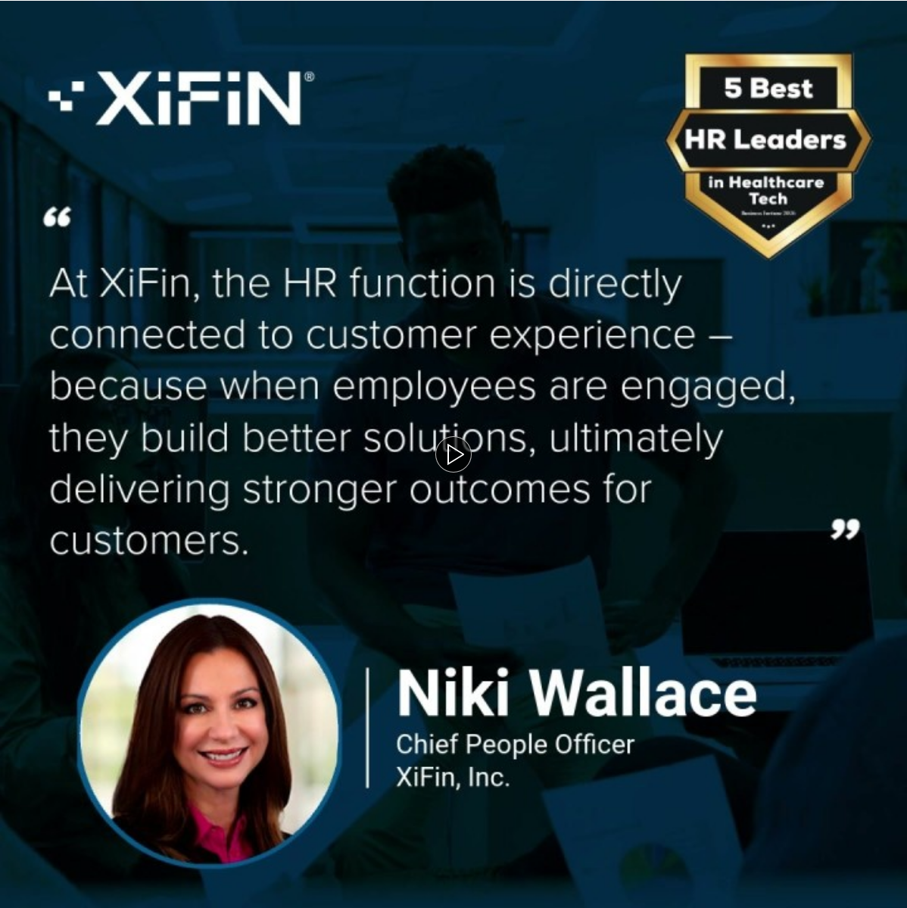
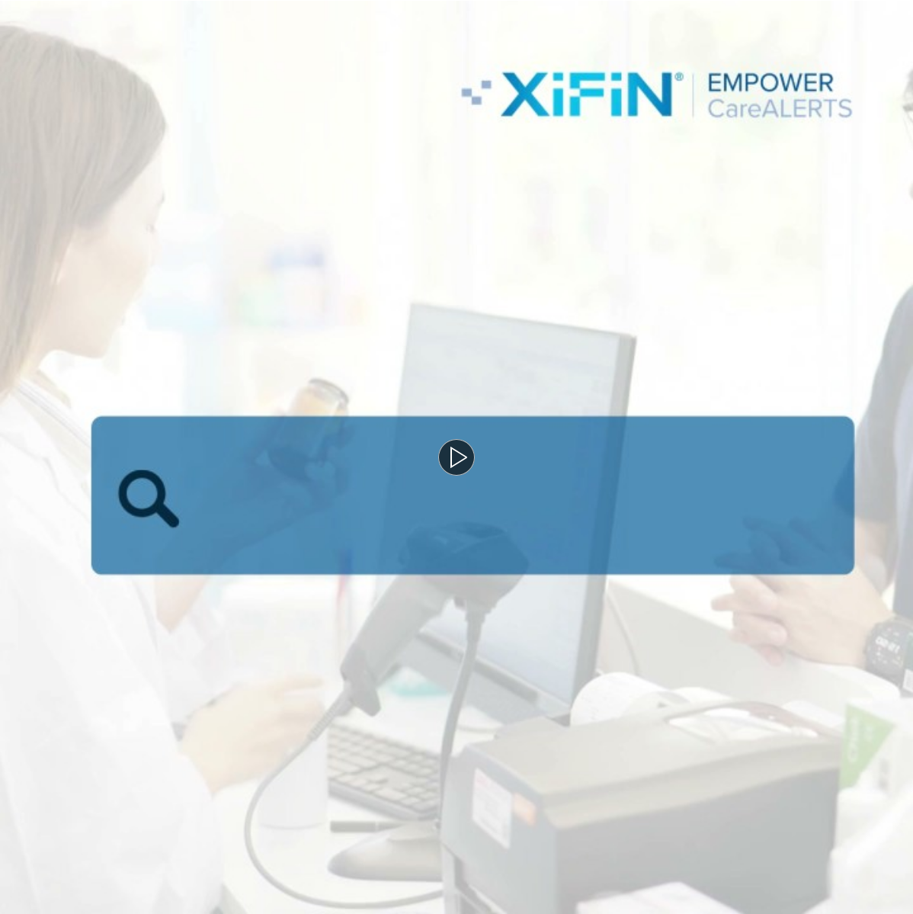
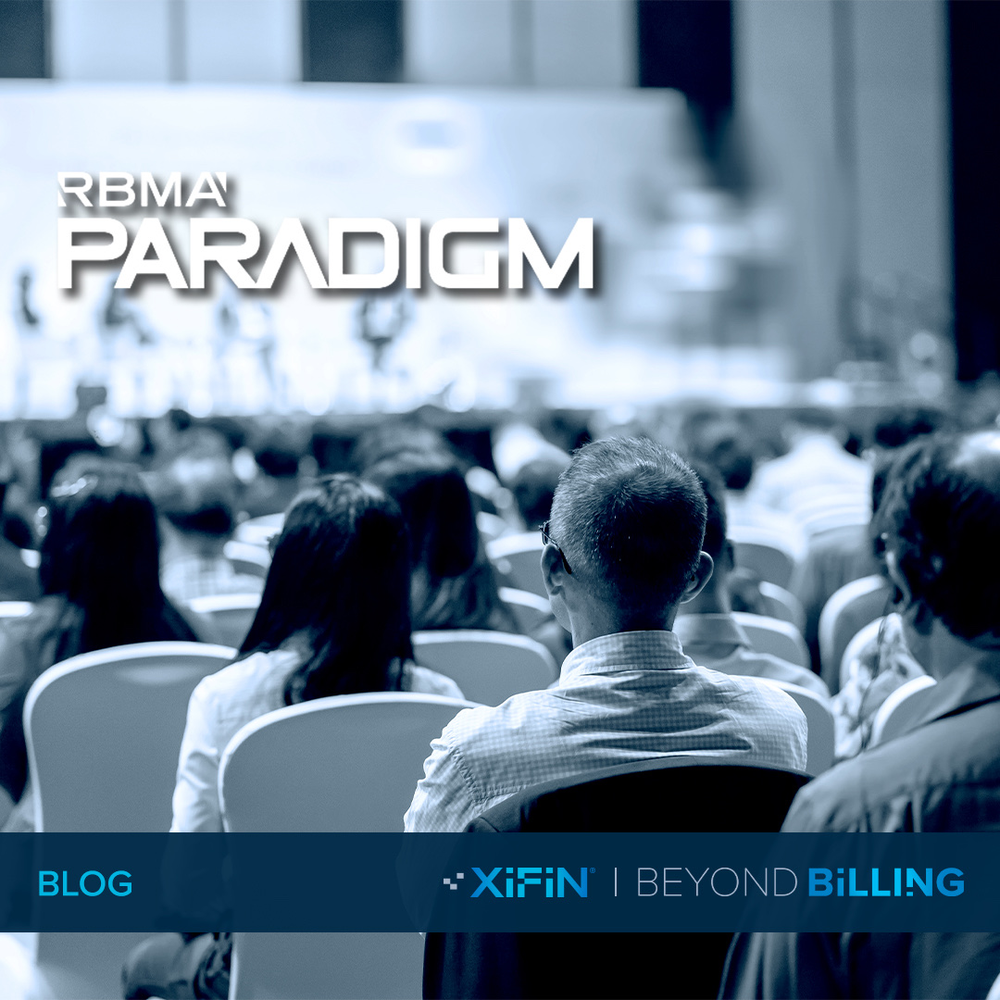

XiFin, Inc.
- Associate Marketing Communications ManagerFebruary 2026 – present
- Marketing Communications CoordinatorDecember 2024 – February 2026
I led digital strategy and high-stakes operations at XiFin, directly supporting revenue and pipeline acceleration through a blend of creative content and precise event execution.
Key Achievements
- Digital Growth: Scaled social output by 85%, driving 229,000+ impressions and a 40% increase in shares. Consolidated brand accounts to reach 18,280+ followers.
- Content Engine: Published 74 blogs (+26% subscriber growth) and managed the customer webinar program, increasing attendance by 9.5% with a 4.6/5 relevancy rating.
- Event Leadership: Helped orchestrate the $116,000 XiConnect Executive Summit as part of the team, leading portions of it, and supported 40+ industry events, managing end-to-end logistics and vendor relations.
- Operational Scale: Fulfilled 3,000+ pieces of collateral for ABM programs and implemented AI-driven workflows to automate reporting and content drafting.
- Recognition: Earned 10 internal excellence awards for cross-functional impact across Marketing, HR, and Customer Success.
- Technical Toolkit: ON24, Meltwater, AI-Augmented Content Creation, Social Analytics, Event Logistics, ABM Strategy.
XiFin Payor Intelligence Hub
I oversaw and helped execute the design of this page, and I maintain its content every month.
XiFin Social Program
Managed a high-velocity social media engine for XiFin, consolidating brand accounts and increasing content output by 85% to drive 229,000+ annual impressions.

LinkedIn · XiFin, Inc.The future of revenue cycle management isn't just about automating more tasks.I made, filmed and edited this.It's about making smarter decisions and taking more coordinated action. In her latest article for HIT Consultant Media, XiFin’s Clarisa Blattner explores how agentic AI is reshaping revenue cycle operations by identifying reimbursement…
LinkedIn · XiFin, Inc.The 30th Annual Executive War College was a tremendous success!🎉 Thank you to everyone who joined us and contributed to the engaging discussions! We look forward to continuing these conversations and driving innovation in the healthcare industry. #ExecutiveWarCollege #EWC25 #HealthcareInnovation…
LinkedIn · XiFin, Inc.🌟 Check Out Our Latest Blog!🌟 Healthcare is facing rising costs, labor shortages, and complex payor rules. Discover how the XiFin Empower Provider Portal is transforming healthcare by cutting unbillable claims by 68% and reducing provider response time from 120+ days…
LinkedIn · XiFin, Inc.📣 May 2025 Update: Payor Rate Transparency MonitorUnlock the power of our free tool to compare in-network reimbursement rates across payors nationwide. With over 7 terabytes of data, you can visualize and analyze rates effortlessly. 📊 🔍 Highlights: 🔹Compare diagnostic test categories,…
LinkedIn · XiFin, Inc.🎄 Holiday Cheer Across Our Offices!From coast to coast, our teams came together to celebrate the season with laughter, delicious food, and festive fun. These gatherings were a wonderful way to wrap up the year and appreciate the amazing people who make each of our locations…
LinkedIn · XiFin, Inc.⚡Accelerated RCM Performance with AI: 40% Faster Error ResolutionA leading integrated health system lab slashed exception processing time by 40% using XiFin Empower RCM with embedded AI. ✅ Auto-generated work queues ✅ Intelligent claim routing ✅ Live productivity dashboards Check out the full success…
LinkedIn · XiFin, Inc.📊 January refresh is here!Kick off the new year with sharper insights. The Payor Rate Transparency Monitor delivers clear visibility into diagnostic and injectable reimbursement rates—empowering labs and providers to negotiate smarter and optimize financial…
LinkedIn · XiFin, Inc.We’re proud to share that Niki Wallace, Chief People Officer at XiFin, has been featured in Business Fortune as one of the Best HR Leaders…In the interview, Niki discusses how people, purpose, and innovation come together to power meaningful change across healthcare. 👉 Read the full feature: https://hubs.li/Q042Nz1Y0 #XiFin #BusinessFortune #HRLeadership #HealthcareTech…
LinkedIn · XiFin, Inc.CareALERTS™ puts real-time vaccination intel right in pharmacy workflow—turning missed moments into measurable impact.See how pharmacies are boosting immunizations and revenue: https://hubs.li/Q0441YyK0 #ForPharmacy #CareALERTSforPharmacy #PharmacyTechnology #ImmunizationPrograms #HealthcareAutomation #ClinicalServices #RevenueGrowthXiFin Blog Program
A selection of SEO-optimized articles and thought leadership pieces developed for XiFin executives to drive brand authority and pipeline growth.

XiFin, Inc.RBMA PaRADigm 2025: Innovations and Key LearningsExplore the RBMA PaRADigm 2025 for key innovations and learnings in radiology, AI, and revenue cycle management.XiFin, Inc.Specialty Pharmacy at a Crossroads: Navigating Access, Complexity, and SustainabilityI wrote this blog.Explore the challenges and opportunities in Specialty Pharmacy at a crossroads: navigating access complexity and sustainability.XiFin, Inc.From Ambiguity to Action: How Claims Status AI Transforms Reimbursement WorkflowsVague A-321 claim statuses slow reimbursement and increase rework. Learn how embedded Claims Status AI translates payor responses into actionable insights—accelerating cash flow in weeks.XiFin Events & Strategic Programs
XiConnect Executive Summit
Helped orchestrate this $116,000 flagship program as part of the team, leading portions of it and coordinating complex logistics including budget tracking, vendor relations, and premium gifting to ensure a seamless executive experience.
Industry Tradeshows & Conferences
Provided end-to-end operational support for 40+ industry events, driving senior-level engagement and pipeline acceleration.